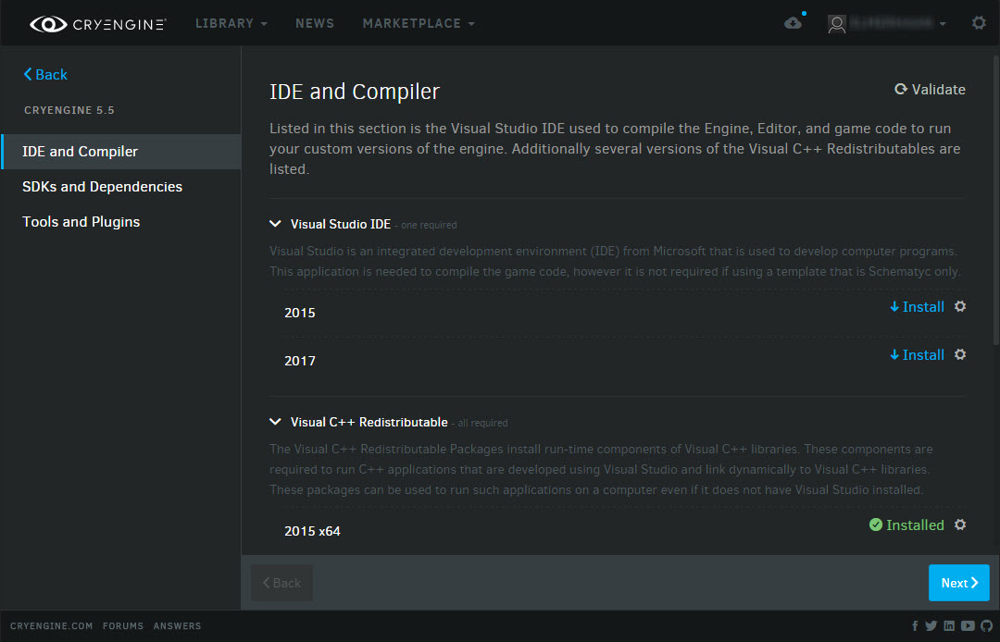
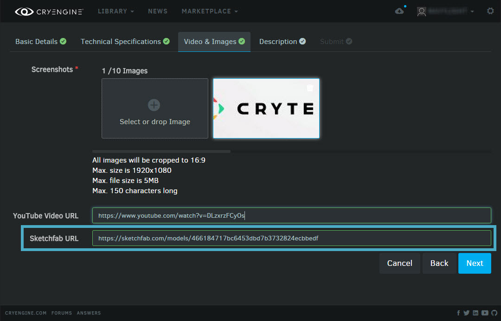

Версия лаунчера 1.9.0
Зависимости стороннего программного обеспечения
Панель запуска CRYENGINE теперь покажет вам список инструментов, плагинов и стороннего программного обеспечения, которые вам необходимо установить. При первой установке CRYENGINE вас спросят, хотите ли вы просмотреть этот список. После этого вы будете получать всплывающее окно каждый майор релиз (не предварительные выпуски), чтобы убедиться, что ваш третийПрограммное обеспечение - party обновлено.
По умолчанию представление «Зависимости» предлагает:
- способ узнать, что у вас установлено необходимое программное обеспечение для выполнения
- возможность проверить наличие необходимых SDK в дереве исходного кода
- обнаружение плагинов для определенных программ
- проверка настроек реестра, путей и библиотек
Эта функция покажет полный список зависимостей, начиная с версии 5.5.
Вам следует периодически проверять этот список и после внесения каких-либо изменений в свою среду, чтобы проверить и исправить настройки и пути. В некоторых случаях для некоторого стороннего программного обеспечения может потребоваться лицензия или оно может размещаться только в домене указанного стороннего поставщика.
Чтобы просмотреть зависимости и проверить, требуется ли обновление какого-либо программного обеспечения, перейдите по ссылке Библиотека -> Мои движки, щелкните раскрывающееся меню версии двигателя, которую вы хотите проверить, и выберите Зависимости.

Поддержка Скетчфаба
Программа запуска и магазин CRYENGINE теперь поддерживают Sketchfab. Это означает, что если у вас есть модель вашего актива, загруженная в ваше портфолио на Sketchfab, вы можете дать ссылку на нее при отправке актива на торговую площадку через панель запуска. Тогда ваши потенциальные покупатели смогут увидеть, как именно он выглядит, когда они проверят ваш актив на торговой площадке!
Чтобы добавить модель своего ресурса в Sketchfab, просто добавьте ссылку во время Видео и изображения шаг подачи актива. Средство просмотра Sketchfab будет встроено на страницу Marketplace, связанную с вашим активом.
